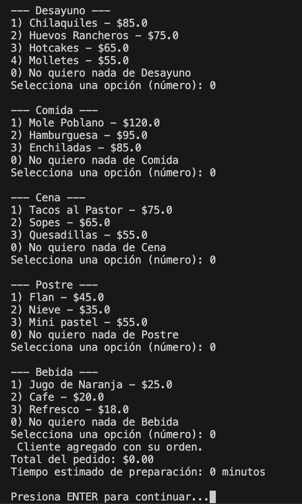
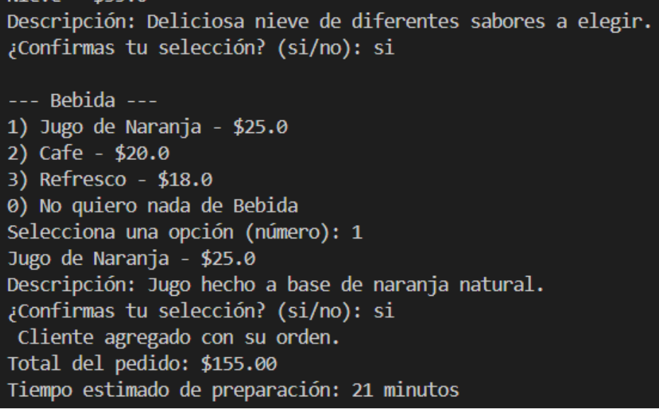
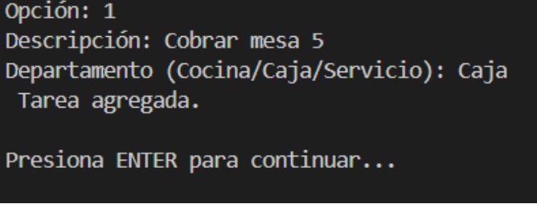
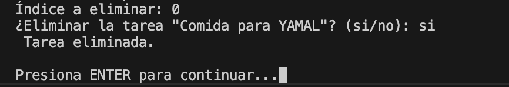
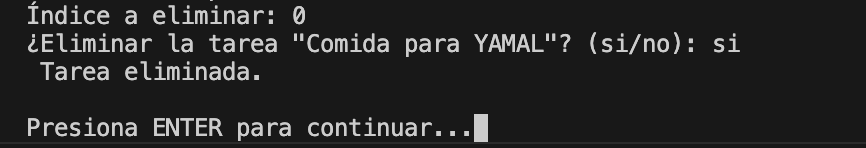

Primero se muestra el sistema de gestion y te las opciones que puedes hacer dentro de este código
Si das enter podrás ver el menú principal donde podrás ver las emergencias, atender clientes, gestionar las tareas, ver todo, los empleados y salir

Si introduces "1" podrás ver el primer menú de emergencias y si nuevamente introduces la opción 1 podrás agregar una nueva emergencia

Después si introduces la opción "2" podrás atender la emergencia que está en el tope y como en este caso solo hay una emergencia pues se atiende esa

Si introduces la opción 4 podrás ver la emergencia del tope que en este caso solo es "comida urgente"

Si introduces la opción 5 podrás ver la lista de emergencias como a continuación se muestra

Después si introduces la opción "0" podrás volver al menú principal

Si introduces la opción "2" podrás ver el menú de clientes y si introduces la opción "1" podrás agregar un nuevo cliente

Despues de agregar el cliente nos preguntara que quiere este como se muestra a continuacion
Al agregar algo el programa nos dara la descripcion del platillo y si queremos confirmar la selccion y si la agregamos entonces el se mostrara el precio y el tiempo estimado de preparacion
En el menu de clientes si introducimos la opcion "2" podremos atender al cliente y los detalles de este

Atender al cliente en la opcion de lista (opcion 3 del menu de clientes)

Si introducimos la opcion "4" podremos ver la lista de clientes que hay en espera
Si introducimos la opcion 0 volveremos al menu principal

Si introducimos la opcion 3 del menu principal entraremos al menu de tareas y si introducimos la opcion 1 podremos agregar una nueva tarea
Despues de agregar la tarea nos mostrara la tarea que se agrego

Si introduces la opcion 2 eliminaras las tareas
 

Si introduces la opcion 3 podras buscar la tarea por texto

Si introduces la opcion 4 podras ver todas las tareas en lista

Si introduces la opcion 0 volveras al menu principal
Si introduces la opcion 4 del menu principal podras ver todas las emergencias, clientes y tareas

Si introduces la opcion 0 volveras al menu principal
Si introduces la opcion 5 del menu principal podras ver los empleados
Si introduces la opcion "1" podras ver quien es el CEO

Si introduces la opcion "2" podras ver quienes son los empleados de caja

Si introduces la opcion "3" podras ver quienes son los empleados de cocina

Si introduces la opcion "4" podras ver quienes son los meseros

Si introduces la opcion 0 volveras al menu principal
Si introduces la opcion 6 del menu principal podras salir del programa